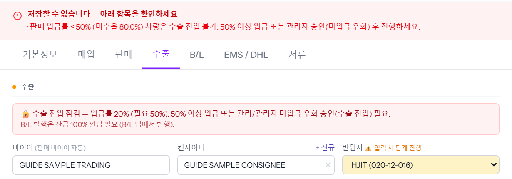
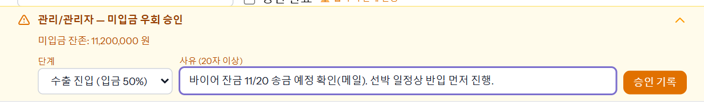
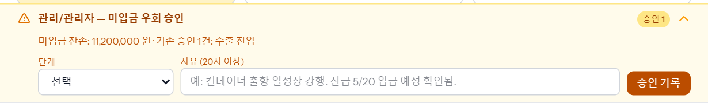
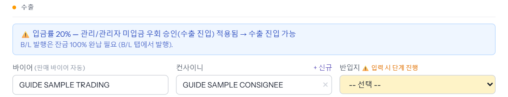
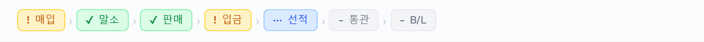

판매 대금을 충분히 받지 못한 차는 수출 탭의 반입지·수출신고서를 저장할 수 없습니다(입금률 게이트). 그래도 먼저 진행해야 하면 관리 이상이 「미입금 우회 승인」을 사유와 함께 남기고, 그 뒤에 수출통관이 다시 저장합니다.
2026-11-14 로컬 화면에서 「수출통관」·「관리」 계정으로 예시 차량 00가1141(USD 판매 10,000 · 2,000 받음 · 입금률 20%)을 실제로 저장하며 찍었습니다. 로컬의 진입 기준은 50% — 운영은 회사·바이어마다 기준이 다를 수 있습니다.
「입금률 20% (필요 50%)」처럼 지금 입금률과 필요한 입금률이 나옵니다. 이 상태에서 반입지를 고르고 [수정 저장]을 누르면 저장되지 않고 이유가 뜹니다.

먼저 바이어에게 대금을 더 받는 것이 원칙입니다 — 씬 「채권관리」. 받기 전에 꼭 반입해야 하면 관리에게 우회 승인을 요청합니다.
관리 · 업무관리자 · 최고관리자에게만 보이는 노란 칸입니다. 지금 남은 미입금(원화)이 함께 보입니다.

[승인 기록]을 누르면 「미입금 우회 승인 완료 — 해당 단계 진입 가능」이 뜨고 칸 머리에 「승인 1」, 아래에 「기존 승인 1건: 수출 진입」이 붙습니다.

차를 다시 열면 빨간 칸이 파란 「입금률 20% — 관리/관리자 미입금 우회 승인(수출 진입) 적용됨 → 수출 진입 가능」으로 바뀌어 있습니다. 반입지를 고르고 [수정 저장]을 누릅니다.

저장되면 진행 줄의 「선적」이 진행 중으로 바뀌고 진행상태가 「선적중」이 됩니다.
